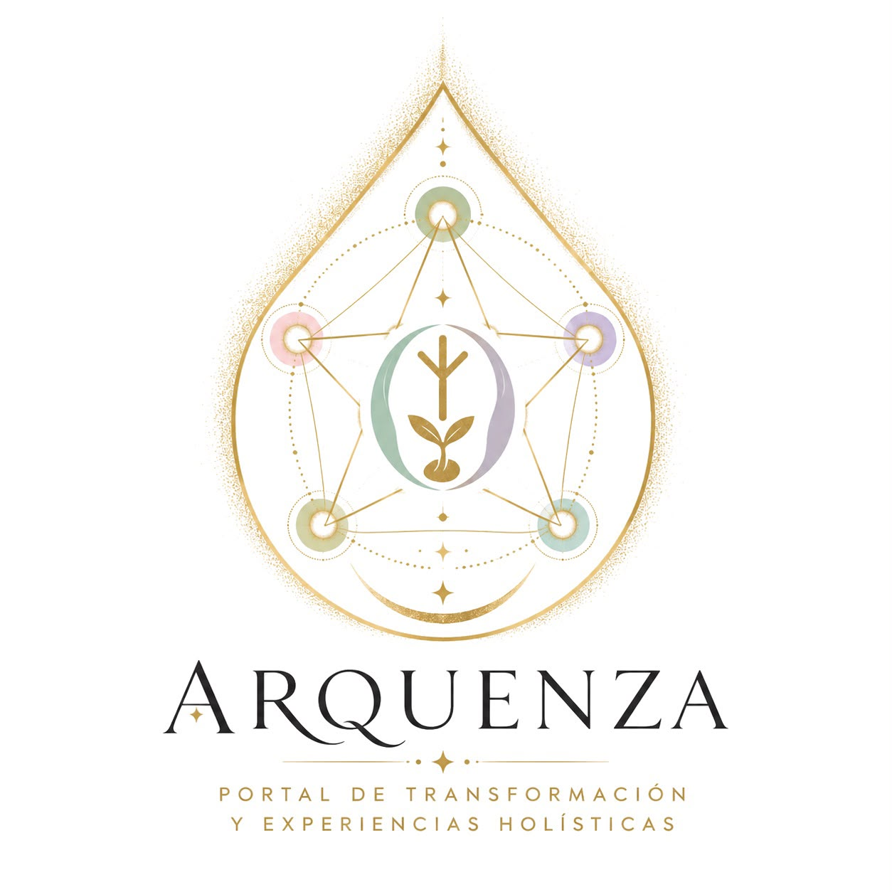

31 días para mirar esas partes de ti que escondes, que te avergüenzan, y volver a vivir desde un lugar más verdadero.
Empecé este proceso sola, en agosto de 2023. Lo viví de nuevo sola en 2024. En 2025, por primera vez, lo viví acompañada: tres mujeres recorrimos juntas esos 31 días. No fue perfecto. Hubo resistencias, silencios, días en los que ni siquiera pude grabar el audio. Y aun así, ninguna salió igual de como entró.
Este agosto reabro ese recorrido — reconstruido, cuidado, con acompañamiento estructurado — para un grupo pequeño que quiera vivir lo mismo: reconocer, atravesar e integrar las partes de sí que ha aprendido a ocultar.
Bajar el ruido, crear seguridad
Reconocer máscaras y silencios
Dar voz a lo contenido
Límites, deseo, poder personal
Integrar y elegir
| Fechas | Condición |
|---|---|
| Ahora – 12 agosto | 147€ — se puede entrar y adaptarse al recorrido |
| 12 agosto, 20:00h | Cierre definitivo de plazas — coincidiendo con el eclipse solar total en Leo |
A partir del 13 de agosto ya no se puede entrar: el acompañamiento real solo puede sostener adaptaciones durante la primera fase del recorrido.
Esto no está incluido — es tuyo, y así debe ser: un espacio que ya es solo para este proceso.
· Un cuaderno físico, dedicado solo a este proceso
· Uno o dos bolígrafos
· Una vela
· Agua
· Todo lo demás es opcional — para algunos rituales puntuales se avisará del material necesario unos días antes
Solo 20 plazas. Completa tus datos, realiza el pago y envía el comprobante a Verónica. Tras verificarlo, recibirás el acceso privado al grupo.
¿Ya has pagado? Envía aquí tu comprobante
¿Tienes dudas antes de reservar? Escríbeme por WhatsApp
No. Es un espacio guiado de trabajo personal, no un tratamiento clínico. Si estás atravesando un proceso de salud mental que requiere apoyo profesional, este programa no lo sustituye.
No. Solo disposición a mirar, a tu ritmo.
Hasta el 12 de agosto a las 20:00h. El acompañamiento aún puede adaptarse a ti mientras estemos en la primera fase del recorrido.
Quien quiera seguir sosteniendo lo vivido tiene un camino natural hacia Equilíbrate, sin ninguna presión de continuar.